Adaptive Lifting / round 3
Weights that tell you what comes next. E / H rising bar / I E + climb / J next plate.
YELLOW GROUND / 180 px

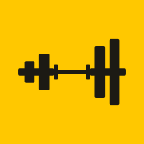
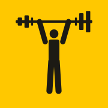
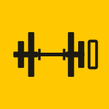
60 px
INK GROUND / 180 px
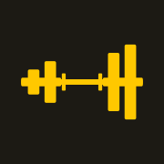
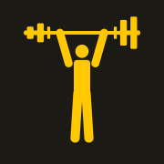
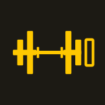
60 px
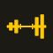
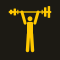
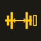
WORDMARKS / real Overpass 900 outlines
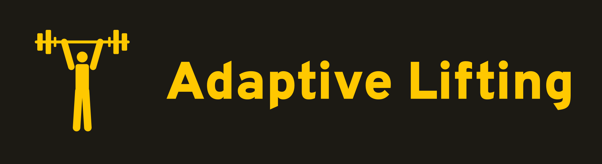

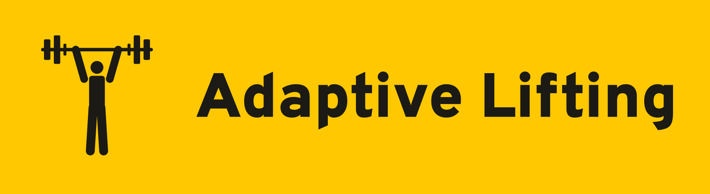

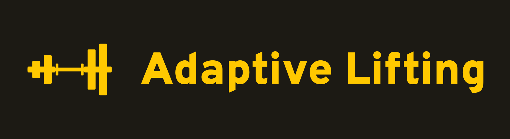

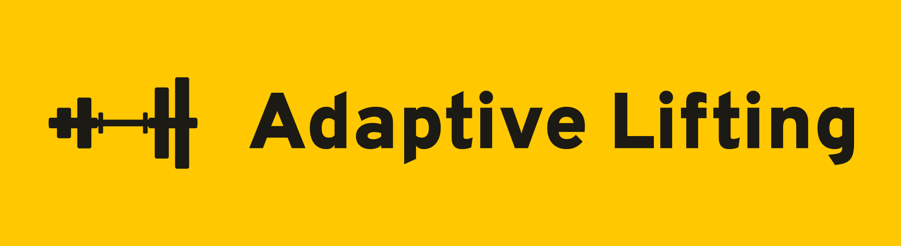

HOME-SCREEN CHECK / yellow icons at actual 60 px
black background
white background